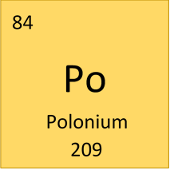
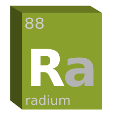
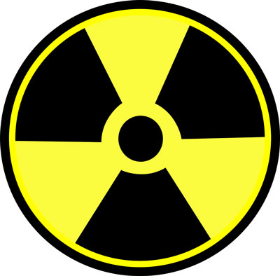

- Prima femeie care a câștigat premiul Nobel în 2 domenii științifice diferite (fizică și chimie)
- A fost prima femeie profesor în cadrul universității Sorobona
- A descoperit 2 elemente chimice, polonium și radium.
- A întors, în fizică, termenul de "radioactivitate"



Sănătatea Mariei Curie a fost afectată de natura muncii sale, la fel lucrurile și jurnalele ei. Din cauza potențialelor pericole generate de nivelurile radioactive, autoritățile franceze păstrează jurnalele în cutii de porumb, iar vizitatorii Bibliothèque Nationale trebuie să semneze o exonerare de răspundere, înainte de a le vizualiza.